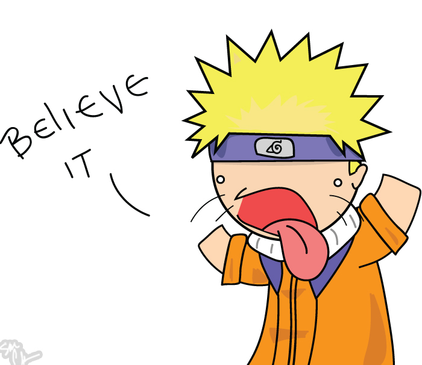

Check Out This Sweet Off Canvas Menu
Click on the hamburger menu button to the left and watch as it animates into an X and displays the navigation bar. Click it again to revert the process! I had a lot of fun building this and it was actually super easy once I learned how to use event listeners and the CSS property: transform.
Built with html, css, vanilla js and a dash of humor by Adam Hauze
